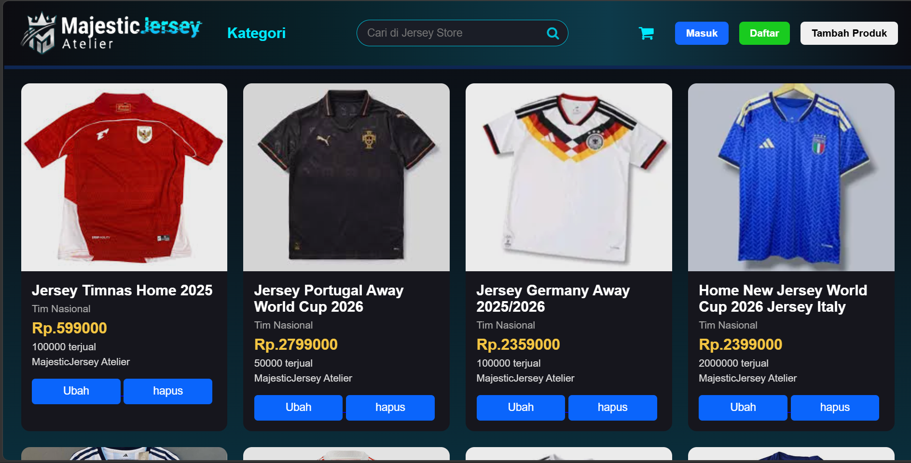
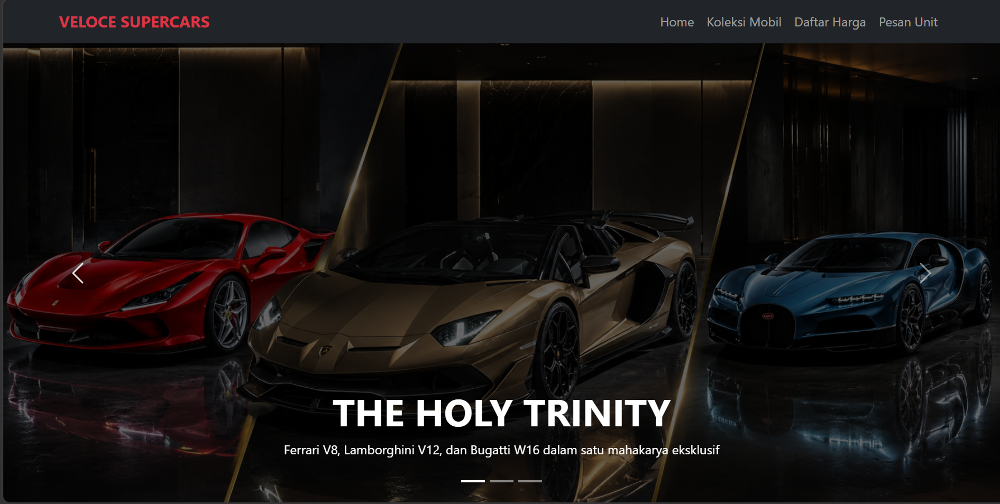
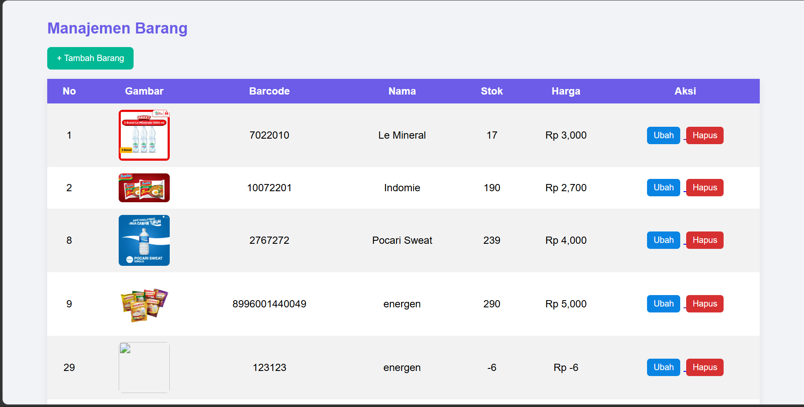

TOKO JERSEY (MAJESTIC JERSEY ATELIER)
E-Commerce UIPlatform katalog toko jersey sepak bola interaktif dengan fitur pencarian, filter kategori, manajemen produk (CRUD), serta antarmuka modern yang responsif.
Siswa SMK Jurusan RPL yang berfokus pada pengembangan aplikasi web fungsional, responsif, dan terstruktur.
Saya adalah seorang siswa SMK jurusan RPL yang memiliki pemahaman teknis dalam pengembangan web dasar serta pengelolaan basis data. Selain dunia teknologi, saya juga memiliki ketertarikan tinggi dalam menganalisis detail spesifikasi perangkat keras/gadget serta dunia olahraga. Saya terbiasa berpikir analitis, beradaptasi dengan alur kerja digital, dan terbuka untuk eksplorasi di berbagai bidang baru.
Rekayasa Perangkat Lunak (RPL)

Platform katalog toko jersey sepak bola interaktif dengan fitur pencarian, filter kategori, manajemen produk (CRUD), serta antarmuka modern yang responsif.

Website landing page showcase mobil mewah modern dengan fitur hero banner carousel, navigasi transparan, serta daftar katalog supercars yang elegan.

Desain halaman depan web modern yang fleksibel dan rapi di layar desktop maupun mobile menggunakan CSS Flexbox.